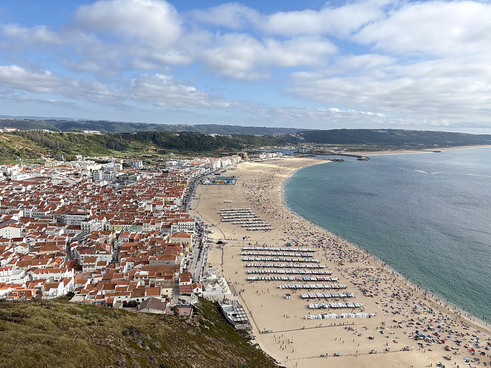

NuovoPortogallo Il viaggio insieme
Fátima e Nazaré, cinque giorni da condividere
Diciotto persone, la spiritualità di Fátima e l’oceano di Nazaré. Daniele ripercorre il viaggio di gruppo e il piacere di vivere insieme ogni tappa.
11–15 settembre 2026 18 partecipanti
Leggi il racconto